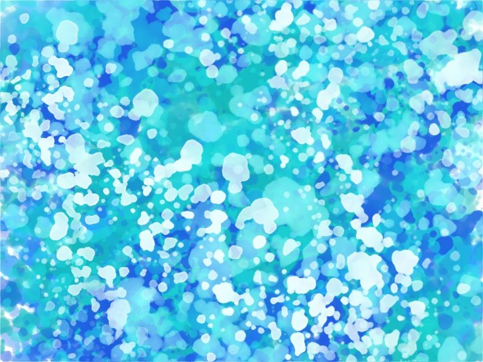

気分はどん底。無理に這い上がろうとしなくてもいいのかも。
生きる鬱期は何もやる気力が出ない。休もうとしているからだ。
でも頭の中は焦って自責の念で休めていない。
今まで面白かったドラマも本も音楽も、全部灰色の石になってしまった。
息は吸いづらい。
気分はどん底。
なんとか這い上がろうと外に出てみたり、気分を上げようとネットショッピングをしてみても、何一つ効果がない。
眠れもしないのに寝たい。
這い上がろう、立ち直ろうと努力するのにも疲れちゃった。
ただただ何の負担もなく休みたい。
それが鬱期。
這い上がろうと立ち直ろうとすると辛いかも。
無気力でいい。
鬱期が終わるまでは5〜20%の力でのろのろ進むしかない。